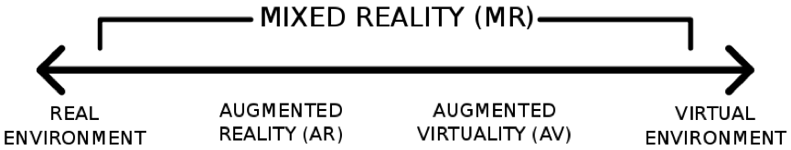

Further Reading List and Reference
Core Platforms and Topics

3DUI
3DUI Research
Blender

Unity3D

C#
Workflow – 3DUI for Interactive VE*
Pipeline Overview
Blender
Modelling
Texturing
Fbx

Unity3D
Shaders
Lighting
C# Interaction
C# Navigation
C# System States

WebGL
Chrome or Firefox
Keyboard Input
Mouse Input
*Virtual Environment
Virtual Environment – 3DUI Needed
Virtual Environment Context
At its most basic, we need some sort of 3D UI to interact with a Virtual Environment.
We may think we know instinctively what a VE is, but to correctly define and use 3D UI concepts, we must know what flavour of VE we are using or need.
This is complicated greatly by public perceptions of VEs and the misnaming and misconceptions that happens.
Mixed Reality Scale



3DUI and VR Examples
Immersive (VR) Journalism
Fishtank VR - Google Cardboard 6 x 9
https://www.theguardian.com/world/ng-interactive/2016/apr/27/6x9-a-virtual-experience-of-solitary-confinement
Desktop VR – Harvest of Change
http://www.desmoinesregister.com/story/money/agriculture/2014/09/17/harvest-of-change-virtual-farm-virtual-reality/15785377/
Syrian Prison
https://saydnaya.amnesty.org/
360 Image/Video w/ 3DUI
HoloBuilder https://www.holobuilder.com/
VR with POV
BBC Taster http://www.bbc.co.uk/taster/
VR with 3D Input
Vive Job Simulator http://jobsimulatorgame.com/